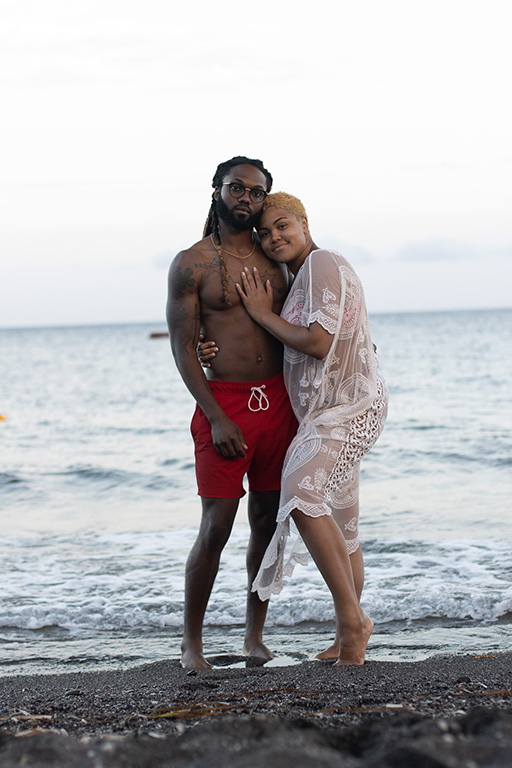

Hello, my name is Amacio Martin. I am a photographer, videographer and soon to be videogame designer. I studeid at University if Virginia but did not finish. Now I am at MC to finally get a degree and aqcuire new skills.
My favorite hobby is playing videogames. For me videogames are my favorite form of entertainment media because of the mix of storytelling and interactability. When I videogame excels in both of those attributes it can create a memorable experience.
I also like exercising and playing basketball. Ever since I was a kid I always thought that when I get older I still want to be physically active and I believe that exercising and maintaining my body can help me achieve that. Playing basketball is another way I try to stay active, it is my favorite sport and sometimes playing and getting up shots can be therapuetic.
My favorite food is seafood, anything seafood. If I go to a restaurant and they have crab cakes that's probably going to be what I get. I also like fish, mussels, lobsters, shrimp, and a bunch more.
My favorite sport to watch and play is basketball. When I was in middle school and high school I played for my schools basketball team. I like basketball because there can only be five people on the court at a time and it allows for everybody on the court to be able to contribute to winning. My favorite team is the Miami Heat, but Kevin Durant, Kyrie Irving, and Lebron James are my favorite active players.
